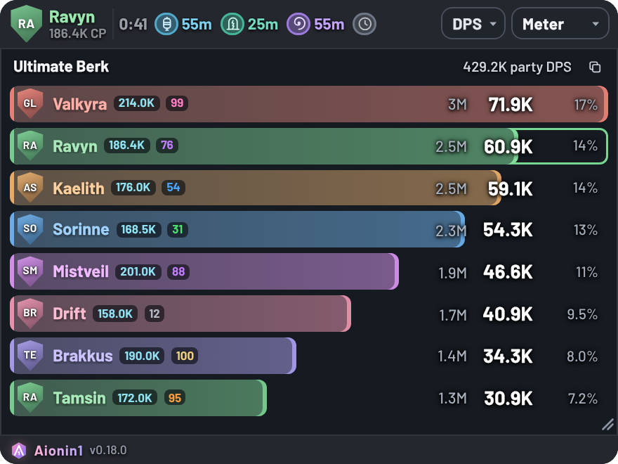
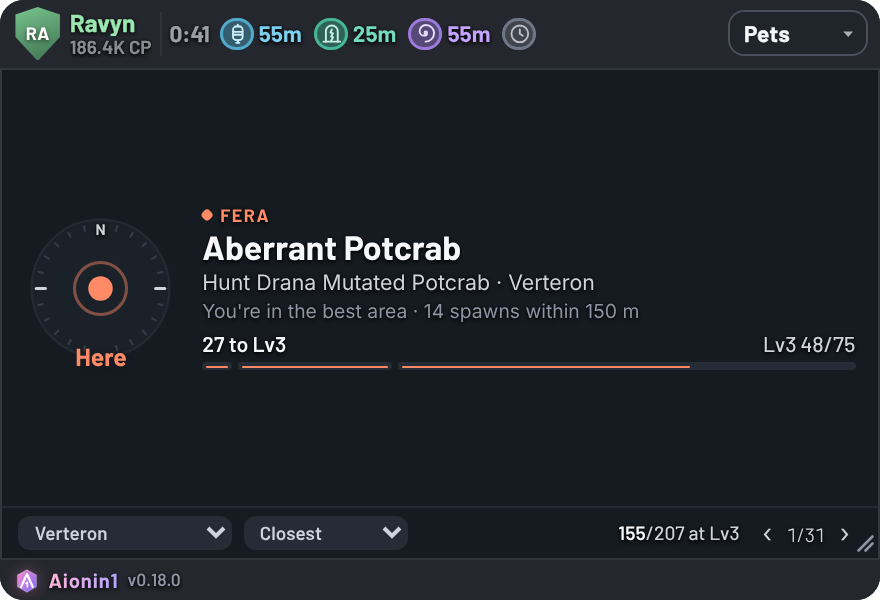
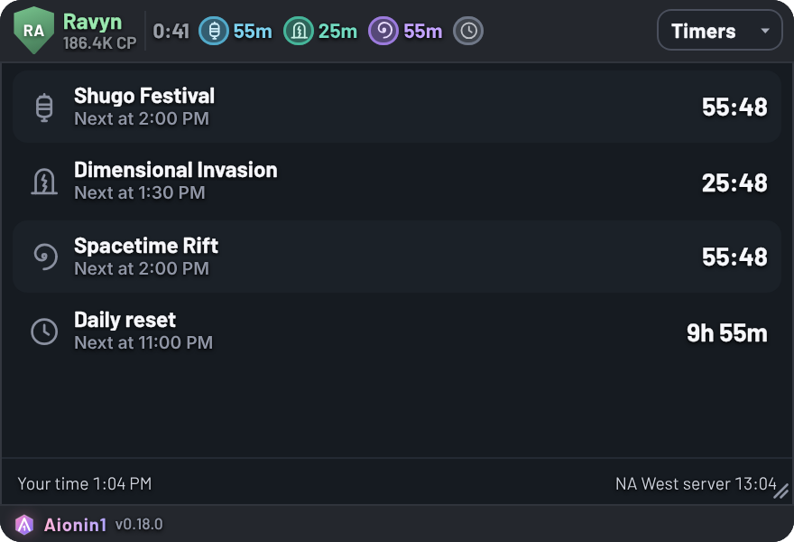
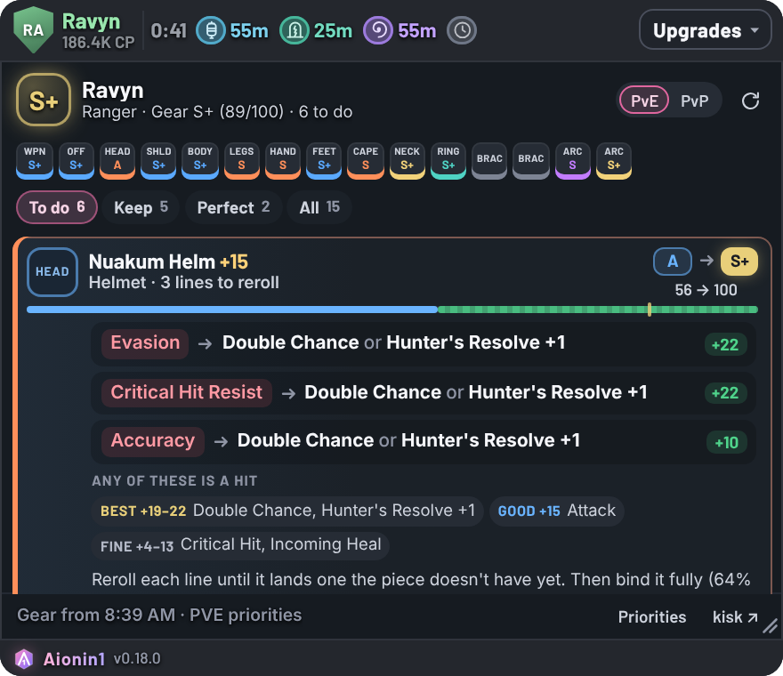

A damage meter, pet compass and event timers for Aion 2
Aionin1 is one small bar that sits over the game. It shows your party's DPS, points you to your next unfinished pet, counts down every event on your server's clock, and tells you which gear lines to reroll.
- Price
- Free
- Game
- Aion 2 Global, NA & EU
- System
- Windows 10 / 11
- Installer
- Aionin1-Setup.exe, 27 MB
- Also needs
- Npcap (free)
- Account
- None

Everyone's DPS, CP and percentile
Each player's damage, their combat power from the official armory, and how their DPS ranks against the same class at a similar CP on that boss.
What it does
Damage meter
Every player's DPS, total damage and share of the fight, with their class and combat power.
- After a dungeon boss kill, a percentile next to each name, compared with the same class at a similar CP.
- Boss health and a kill-time estimate while you fight, and your ping to the server.
- An invulnerable phase or a run-out doesn't split the fight in two.
- Copy a summary for party chat.
Pet compass
Picks the densest known spawn area for each unfinished pet on your map and points you there, with the distance in meters.
- Inside the area it says Here, so you can run between spread-out mobs.
- Counts the souls each pet still needs to reach Lv3.
- Sort by closest, fewest souls left, or name.

Event timers
Shugo Festival, Dimensional Invasion, Spacetime Rift and the daily and weekly resets, counted down on your region's server clock, daylight saving included.
- Logos on the bar light up 5 minutes before an event and stay lit while you can join.
- An optional chime before the events you pick.

Gear upgrades
Reads your equipped gear from the official armory and grades every piece from D to S+ by your class's PvE or PvP priorities.
- To do: the exact line to reroll and what to aim for.
- Keep: already S+, with what would make it perfect later.
- Perfect: every line is the best its slot can roll.

Also
Grind tracker
Kinah, Abyss Points, kills, pet souls and drops per hour. Pauses itself when you go idle.
Activities
Duty quests, keys and weekly tasks for each of your characters, read from the game.
Click-through
Never takes focus from the game. Lock it and every click goes to Aion 2.
Display options
Bar styles, colors, fonts, sizes, which columns show and how see-through it is.
Updates itself
An Update button appears on the HUD when a new version is out.
No account
Your fights stay on your PC unless you choose to share boss kills anonymously.
Install
Download and run the installer
Get Aionin1-Setup.exe and run it. It installs for your Windows user, with no admin prompt.
The installer isn't code-signed yet, so Windows may say "Windows protected your PC". Click More info, then Run anyway.
Install Npcap
Aionin1 reads the game's traffic through Npcap, the free capture driver Wireshark uses. Install it with the default options. The installer reminds you if it's missing.
Start it before you log in
Open Aionin1, then enter the world. Drag the bar where you want it and resize it from any edge.
Press Alt+Shift+F10 to lock it, so every click goes to the game.
| Keys | Action |
|---|---|
| Alt+Shift+F10 | Lock or unlock the HUD |
| Alt+Shift+F9 | Reset the damage meter |
| Alt+Shift+F11 | Step the meter through DPS, damage, share and Grind |
| Alt+Shift+F7 | Next HUD section |
| Alt+Shift+F12 | Show or hide the HUD |
| Alt+Shift+F8 | Open the full app, or go back to the HUD |
| Alt+Shift+F6 | Start or stop a Grind session |
FAQ
Is it allowed? Can I get in trouble?
Aionin1 only reads the network traffic the game already sends to your PC. It doesn't change game files, inject anything into the client or play for you.
NCSOFT hasn't approved any third-party meter, so like every overlay of this kind it's used at your own risk.
Will it lag my game?
It reads a copy of traffic that has already arrived, on its own threads, and never sits between you and the server. The HUD only redraws what changed.
What does it send, and where?
It looks up combat power and gear on the official Aion 2 armory, and checks GitHub for updates.
If you choose to share boss kills, each dungeon boss kill is sent anonymously to build the percentiles: the boss, each player's class, CP, DPS and the fight length. No names. The meter asks once, and you can change it in Settings.
Why does it need Npcap?
Npcap is the standard Windows capture driver, the same one Wireshark uses. It's how Aionin1 sees the combat, pet and position data the game sends.
Does it work with ExitLag or other boosters?
Yes. With a booster the ping shows "Booster", since the real server ping happens on the booster's side.
Mac, Linux or Steam Deck?
Windows only for now.
I found a bug or want a feature
Open an issue on GitHub. Every version's changes are in the release notes.